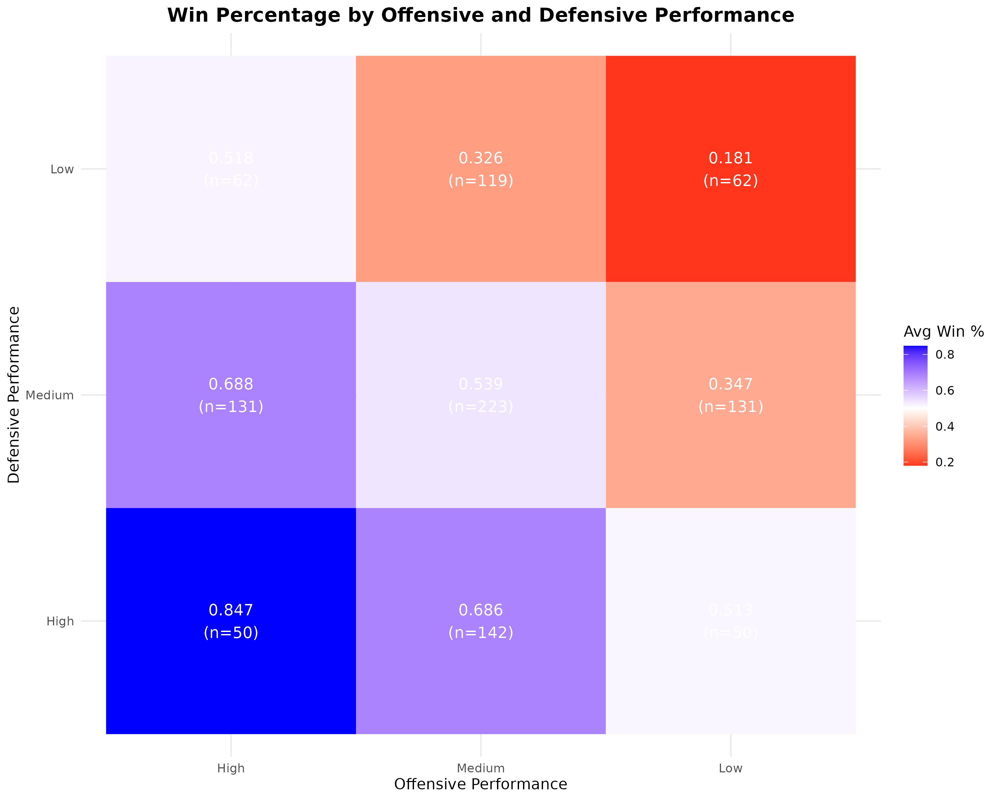
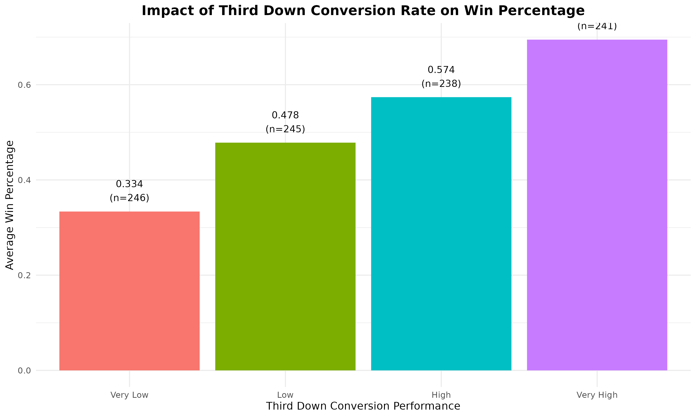
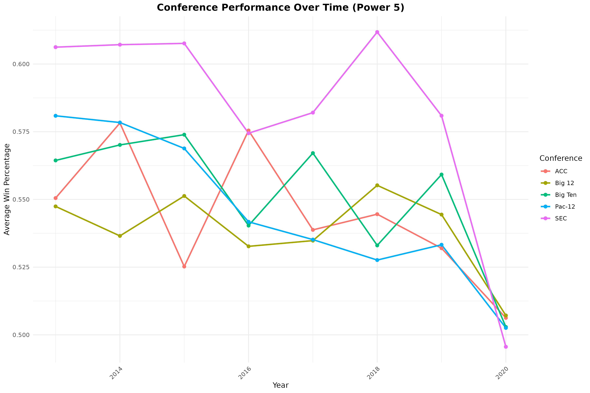
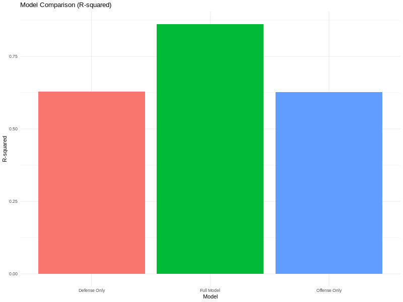

Uncovering the key factors that drive college football success
This comprehensive analysis examines NCAA football data spanning from 2013 to 2023, covering over 145 different metrics for all FBS teams. Our goal was to identify the key performance factors that most strongly predict team success and provide actionable insights for college football programs.
Our analysis combined exploratory data analysis, statistical modeling, and machine learning techniques to uncover the most important factors that contribute to winning in college football.
One of the most fundamental questions in football is whether offense or defense contributes more to team success. Our analysis provides a clear answer: balance is key.
Win percentage
Win percentage
Win percentage
Win percentage
Teams that excel in both offensive and defensive performance have a dramatically higher win percentage (84.7%) compared to teams that are strong in only one area (approximately 51%). This demonstrates that balanced teams consistently outperform one-dimensional teams.
Our analysis revealed that efficiency metrics are the strongest predictors of team success, with third-down conversion rates being particularly important.
Win percentage
Win percentage
Teams with high third-down conversion rates had more than double the win percentage compared to teams with low conversion rates.
Teams with a positive turnover margin (>+1) had a 64.3% win rate, compared to just 35.7% for teams with a negative margin (<-1).
Red zone scoring percentage showed a strong positive correlation with win percentage (r=0.58).
Our statistical models confirmed that efficiency metrics collectively explained 72% of the variation in win percentage, making them the most important category of performance indicators.
The analysis of conference performance over the decade revealed significant differences between conferences, with the SEC emerging as the most dominant.
Average win percentage
Average win percentage
Average win percentage
Statistical analysis confirmed significant differences between conferences (ANOVA p-value < 0.001). The SEC maintained the highest average win percentage (58.3%), followed by the Big Ten (55.1%) and Pac-12 (54.6%). Group of Five conferences generally had lower average win percentages, with the MAC, C-USA, and Sun Belt showing the lowest performance.
We built several statistical models to quantify the relative importance of different factors in predicting team success.
The most important predictors of win percentage were:
Special teams metrics showed a statistically significant but modest relationship with win percentage, explaining only about 2% of the variation in team success.
Dedicate specific practice sessions to third-down situations, implement ball security drills, and create specialized red zone packages.
Allocate recruiting resources evenly between offensive and defensive talent, and ensure practice time is distributed equitably.
Tailor recruiting and development strategies to your conference's competitive landscape and study successful programs within your conference.
View special teams as complementary to core offensive and defensive development, focusing particularly on kickoff returns.
Identify and develop players who excel in third-down situations and create specialized third-down packages on both offense and defense.